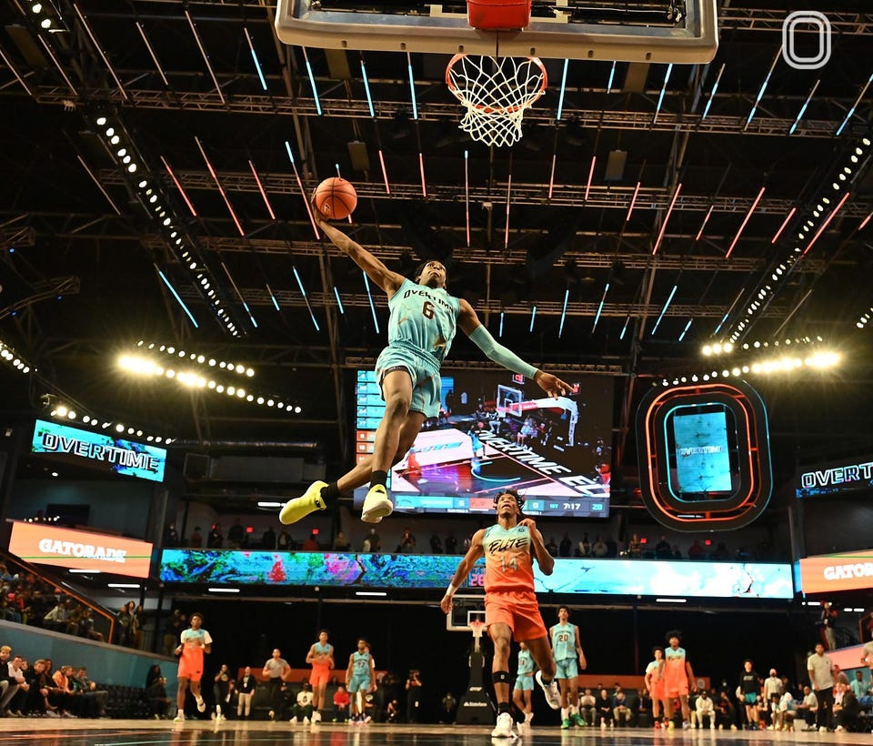

ເປັນກິລາຫນຶ່ງທີ່ຫລີ້ນລະຫວ່າງສອງທີມ ທີມລະຫ້າຜູ້ຫລິ້ນໃນສະຫນາມສີ່ຫລຽມປົກກະຕິເເລ້ວຈະຢູ່ໃນຮົ່ມ ເເຕ່ລະທີມພະຍາຍາມເກັບຄະເເນນໂດຍການໂຍນຫມາບານໃຫ້ເຂົ້່າປະຕູຂອງຝ່າຍກົງກັນຂ້າມ
1.ເສີມສ້າງຄວາມອົດທົນຂອງກ້າມເນື້ອ ເພາະ ການຫລີ້ນກິລາບານບ້ວງຕ້ອງອາໄສຕາມຕ້ອງຕົວ,ຄວາມເເຂງເເຮງ.
2.ສ້າງກະດູກໃຫ້ເເຂງເເຮງ.
3.ພັດທະນາທັກສະການເຄື່ອນໄຫວຂັ້ນພື້ນຖານ.
4.ປັບປຸງອົງປະກອບຂອງຮ່າງກາຍ.
s
5.ຊ່ວຍເພີ່ມສຸຂະພາບຫົວໃຈ